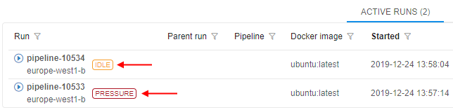
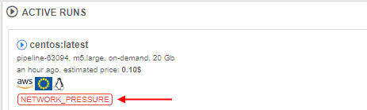
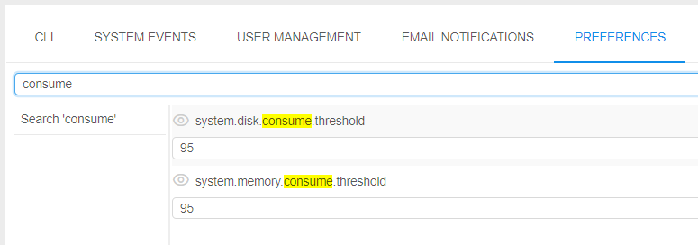

Automatic actions with runs
In this section, let's consider the configurable behavior of automatic actions/notifications for the launched runs that are being in "idle" or "under pressure" state for a long time.
The following view of high-level metrics information for the Active Runs is implemented:
- - this auxiliary label is shown when node's CPU consumption is lower than a certain level, defined by the admin. This label should attract the users attention cause such run may produce extra costs.
 - this auxiliary label is shown when node's Memory/Disk consumption is higher than a certain level, defined by the admin. This label should attract the users attention cause such run may accidentally fail.
- this auxiliary label is shown when node's Memory/Disk consumption is higher than a certain level, defined by the admin. This label should attract the users attention cause such run may accidentally fail.
These labels are displayed:
- at the Runs page
 - at the Run logs page

- at the main dashboard (the ACTIVE RUNS panel)

If a user clicks that label from the Runs or the Run logs page the Cluster node Monitor will be opened to view the current node consumption.
Admins can configure the emergence of these labels and system actions for each run state ("Idle"/"Pressure") by the system-level parameters.
"Idle" runs
The system behavior for the "idle" runs is defined by the set of the following System-level parameters (Preferences):
| Preference name | Description |
|---|---|
system.max.idle.timeout.minutes |
Specifies the duration in minutes after that the system should check node's activity. If after this duration node's CPU utilization will be below system.idle.cpu.threshold - email notification IDLE_RUN will be sent to the user and the run itself will be marked by the label |
system.idle.action.timeout.minutes |
Specifies the duration in minutes. If node's CPU utilization is below system.idle.cpu.threshold for this duration after the system.max.idle.timeout.minutes is over - an action, specified in system.idle.action will be performed |
system.idle.cpu.threshold |
Specifies percentage of the node's CPU utilization, below which an action shall be taken |
system.idle.action |
Sets which action to perform with the node, that has the CPU utilization below than system.idle.cpu.threshold:
|
system.resource.monitoring.period |
Specifies period (in milliseconds) between the scannings of running instances to collect the monitoring metrics. After each such period, it's defined to display label for the specific instance or not |
Example of these settings:

In general, the behavior will be the following:
- User launches a run
- After
system.max.idle.timeout.minutesperiod, the system starts to check the node's activity. - If the node's CPU utilization becomes below
system.idle.cpu.threshold: email notification IDLE_RUN is being sent, the run itself is being marked by the label - After
system.idle.action.timeout.minutes, if the node's CPU utilization is still belowsystem.idle.cpu.threshold:- email notification IDLE_RUN is being sent (in case when
system.idle.actionis set as NOTIFY) - run is being paused/stopped and the corresponding email notification IDLE_RUN_PAUSED or IDLE_RUN_STOPPED is being sent (in case when
system.idle.actionis set as PAUSE/PAUSE_OR_STOP/STOP)
- email notification IDLE_RUN is being sent (in case when
- In case when
system.idle.actionis set as NOTIFY, email notifications IDLE_RUN continue to be sent everysystem.idle.action.timeout.minutes, if the node's CPU utilization remains below thesystem.idle.cpu.threshold - The state of the label (to display or not) is checked every
system.resource.monitoring.period - The settings of the email notifications (message, the list of informed users, etc.) the admin can configure via the corresponding tab Email notifications of the system-level settings:

Note: users can manually disable the automatic pausing of on-demand instances if they aren't used. For that the "Auto pause" checkbox at the Launch page shall be unchecked before the run:

This action cancels only the auto pause, but the RUN_IDLE email notifications will be being sent (if the corresponding conditions will be met).
"Pressure" runs
The system behavior for the runs "under pressure" (high-consumed) is defined by the set of the following System-level parameters (Preferences):
| Preference name | Description |
|---|---|
system.disk.consume.threshold |
Specifies the node's disk threshold (in %) above which the email notification HIGH_CONSUMED_RESOURCES will be sent and the corresponding run will be marked by the label |
system.memory.consume.threshold |
Specifies the node's memory threshold (in %) above which the email notification HIGH_CONSUMED_RESOURCES will be sent and the corresponding run will be marked by the label |
Example of these settings:

So, when memory or disk consuming will be higher than a threshold value for a specified period of time (in average) - a notification will be sent (and resent after a delay, if the problem is still in place. The default repeat delay is 30 minutes, it could be configured before the stand deployment).
Preferences of the notification could be configured at the HIGH_CONSUMED_RESOURCES section of the Email notifications of the system-level settings: